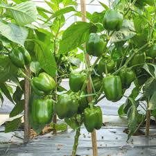

Round Tomato Seeds (15 seeds)
Rs. 10.00

Spinach Seeds (100 seeds)
Rs. 15.00

Chilli Seeds (20 seeds)
Rs. 10.00

Lady Finger Seeds (10 seeds)
Rs. 10.00

Beans Seeds (10 seeds)
Rs. 10.00

Capsicum Green Seeds (10 seeds)
Rs. 20.00

Ridge Gourd Seeds (5 Seeds)
Rs. 15.00